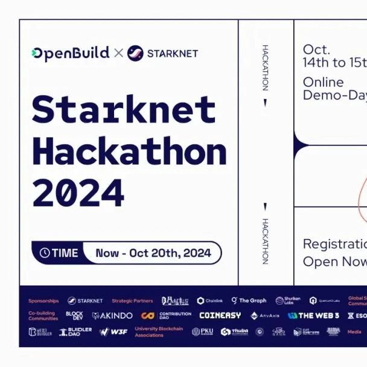

SeeDAO友推｜Starknet 黑客马拉松：释放你的创意，赢取丰厚大奖！
作者: OpenBuild

由 Starknet 基金会和OpenBuild 联合发起的第二届 Starknet Hackathon 正式上线！你可以自由探索创造基于 Starknet 的所有解决方案争夺大赛奖金、提升自身实力，收获宝贵的友谊与合作经验📆时间：2024年9月10日至2024年10月15日
为什么要参加
Starknet Hackathon
这次 Hackathon 将带你深入体验 Starknet 技术，通过实际开发项目，快速提升你的技能，深入了解区块链技术的更多可能性！没用过 Starknet？不用担心！我们为你准备了全套 Bootcamp 和公开课，助你快速入门，轻松开发出属于你的项目。学习资源链接： https://openbuild.xyz/learn/courses/1044572338（中文版本） https://openbuild.xyz/learn/courses/1044572314（英文版本）本次黑客松不仅仅是写代码，我们鼓励你开发出能真正解决实际问题的应用程序。无论是隐私保护、链上游戏，还是开发工具，都欢迎你大胆发挥创造力，尽情展示你的实力！通过这次活动，你将结识一大批志同道合的开发者，扩展你在全球 Web3 社区的影响力和职业机会。拿出你的技术实力，赢取大奖！不仅有奖金，还有孵化机会和来自 Starknet 团队的认可等你拿！此次 Hackathon 为开发者提供了多个赛道，满足你不同的开发需求和兴趣点：DeFi 赛道：
挑战开发出创新的 DeFi 解决方案。
综合赛道：
任何创新的去中心化应用都可以在此展示，不限领域。
全链游戏赛道：
结合区块链技术的游戏开发，为玩家带来独特的链上体验。
最受社区欢迎奖：
设有特别奖项，表彰在社区中获得高度认可的项目。
这次 Hackathon 不收取任何费用，任何开发者都能参与！无论你是技术大牛还是刚入门的小白，这里都有适合你的挑战，快来一起大展身手吧！具体参赛流程如下：2024年9月10日 - 10月11日，提交你的报名信息，然后就可以开始着手构建你的应用啦。
报名链接：
https://build.bewater.xyz/en/campaigns/jK6g-Starknet-Hackathon-2024
你可以在 2024年10月12日之前提交你的项目。
2024年10月14日 - 10月15日，展示你的项目，和全球的开发者、评委面对面交流，获取反馈与建议。除了丰厚的奖金外，Starknet Hackathon 还为参与者提供了宝贵的资源和成长机会：• Starknet 团队的技术支持：你将有机会直接与 Starknet 团队接触，获得他们的指导与支持，帮助你更好地完成项目。• 广阔的社区与资源：通过这次 Hackathon，你不仅能够结识全球的技术开发者，还能与投资人、生态项目建立联系，扩展你的人脉网络。• 潜在孵化与资金支持：优秀的项目将有机会获得 Starknet 官方的孵化支持，为你的项目提供后续发展的机会和资源。Starknet Hackathon 2024 是一个展示创意和技术的绝佳平台，也是你进入 Web3 世界，结识全球顶尖开发者的入口。无论你是单打独斗，还是组队参赛，千万不要错过这次难得的机会。加入我们，一起推动去中心化应用的发展，为 Web3 的未来贡献一份力量！